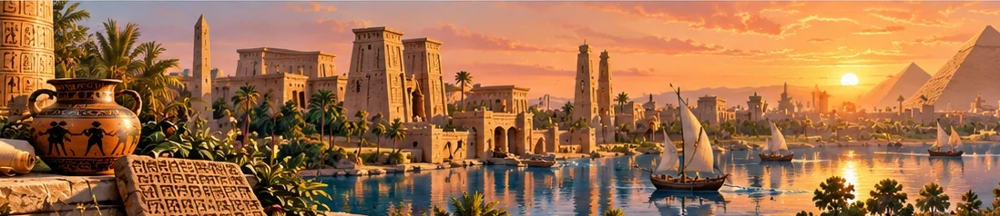

Параграфи розділу
Бронзовий вік
Сплав міді та олова, виникнення ремесла, другий суспільний поділ праці, розвиток товарного обміну та ранніх форм грошей та формування держави.
Що в історії називають цивілізацією
Перехід від первісності до цивілізації: поява міст, писемності, держави, монументальної архітектури та писемних законів.
Природні умови та господарство Месопотамії
Межиріччя Тигру й Євфрату, іригаційне землеробство, будівництво дамб та каналів, вирощування зернових та садівництво.
Міста-держави Месопотамії
Шумерські міста (Ур, Урук, Лагаш), храми-зикурати, влада жерців і правителів (енсі та лугалі), об'єднання Шумеру.
Суспільний устрій та Закони Хаммурапі
Розквіт Вавилонського царства, відомий збірник правових приписів царя Хаммурапі, принцип «око за око», поділ суспільства.
Держави залізного віку: Ассирія та Вавилон
Військова могутність Ассирії, залізна зброя та тарани, Ніневія, Нововавилонське царство і Висячі сади Вавилона (традиційна атрибуція).
Повсякденне життя населення Месопотамії
Будинки з цегли-сирцю, родинні звичаї, традиції харчування, одяг, виховання дітей та становище жінок у стародавньому Дворіччі.
Писемність та наукові знання
Клинопис на глиняних табличках, глиняні школи («будинки табличок»), розвитку математики, шестидесяткова система числення.
Релігія та література
Релігійний пантеон (Мардук, Іштар), міфи про творення світу, знаменитий «Епос про Гільгамеша» та легенда про Всесвітній потоп.
Бронзовий вік на українських землях
Археологічні культури бронзового віку в Україні: ямна, катакомбна, зрубна; розвиток скотарства, курганний обряд та металургія.
Єгипет — дарунок Нілу
Географічне положення, щорічні розливи Нілу, родючий чорний мул, номи та об'єднання Верхнього і Нижнього Єгипту царем Менесом.
Влада і суспільний устрій Давнього Єгипту
Абсолютна влада фараона, чиновники-писарі, вельможі, воїни, селяни-землероби та становище рабів («живі вбиті»).
Видатні правителі та війни Давнього Єгипту
Жінка-фараон Хатшепсут, завоювання Тутмоса III, реформа Ехнатона, Рамзес II та одна з найдавніших відомих мирних угод після Битви при Кадеші.
Повсякденне життя Давнього Єгипту
Житло з мулу й очерету, льонаний одяг, зачіски, традиції харчування, розваги та ремесла давніх єгиптян.
Писемність, релігія та мистецтво Давнього Єгипту
Ієрогліфи та папірус, релігійний культ Осиріса та Амона-Ра, бальзамування, мумії, піраміди Гізи та величні храми Луксора.
Фінікія
Міста-держави Тір, Сідон, Бібл; мореплавці, заснування колоній (Карфаген), винайдення пурпуру, скла та створення першого алфавіту.
Ізраїльське царство
Земля Ханаан, розквіт держави за царів Давида та Соломона, будівництво Єрусалимського храму, монотеїзм (єдинобожжя).
Хетська держава. Навала народів моря
Хетська імперія в Анатолії, майстерність обробки заліза, вторгнення «народів моря» та Катастрофа бронзового віку.
Персія
Утворення Перської імперії Киром Великим, реформи Дарія I, сатрапії, карбування «даріків», Царська дорога та зороастризм.
Залізний вік на теренах України: кіммерійці та скіфи
Кочовики кіммерійці та скіфи, Велика Скіфія, Пектораль з Товстої Могили, кургани та невдалий похід Дарія I у скіфські степи.
Хараппська цивілізація
Стародавня цивілізація долини Інду (Мохенджо-Даро та Хараппа), планування міст, водопровід, каналізація та нерозшифрована писемність.
Ведійський період в історії Індії
Прихід кочових аріїв в Індію, священні тексти «Веди», утворення варново-кастового устрою (брахмани, кшатрії, вайшії, шудри).
Релігії Індії. Імперія Маур’їв
Зародження індуїзму та буддизму (Сиддхартха Гаутама), об'єднання Індійських земель царем Ашокою, кам'яні стовпи з едиктами.
Цивілізація Давнього Китаю
Річки Хуанхе та Янцзи, вирощування рису, винайдення шовківництва, найдавніші династії Шан (Їнь) та Чжоу.
Давньокитайські держави. Імперія Цінь
Епоха «Воюючих царств», імператор Цінь Шихуанді, будівництво Великої Китайської стіни та гробниця з Теракотовою армією.
Культура Давнього Китаю
Філософські вчення Конфуція (конфуціанство) та Лао-цзи (даосизм), ієрогліфічна писемність, розвиток паперу, ранніх магнітних покажчиків та інших науково-технічних здобутків.
Стародавні цивілізації: від перших міст до великих держав
Повтори, як у Месопотамії, Єгипті, Індії та Китаї виникали перші держави, міста, писемність, вірування й культурні традиції. Історичні карти, схеми, інтерактивні вправи та перевірки знань допоможуть краще зрозуміти й узагальнити матеріал.
